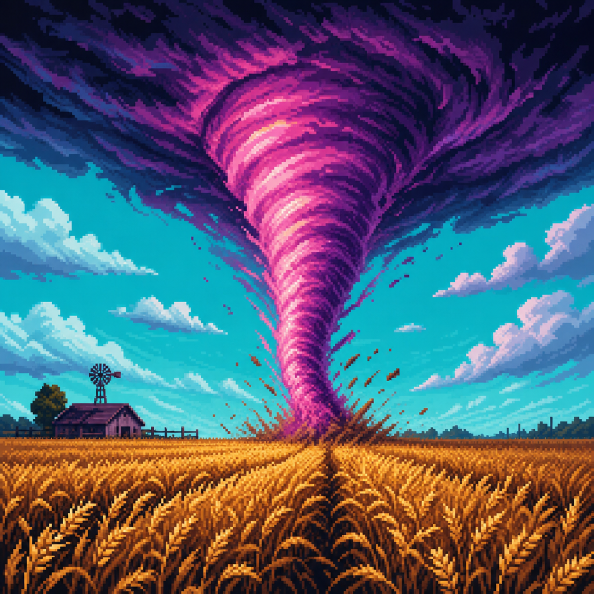

Décoder une chute de pression
12/04/2024
Guide de terrain pour savoir quand sortir le trépied, la radio et le k-way fluorescent.
Structure d'une supercellule française
02/06/2024
Base, inflow, outflow et pièges visuels : notes depuis la Beauce.

Rapport spécial tuba et tornade
18/09/2024
Comment documenter sans gêner les secours ni se mettre au mauvais endroit.